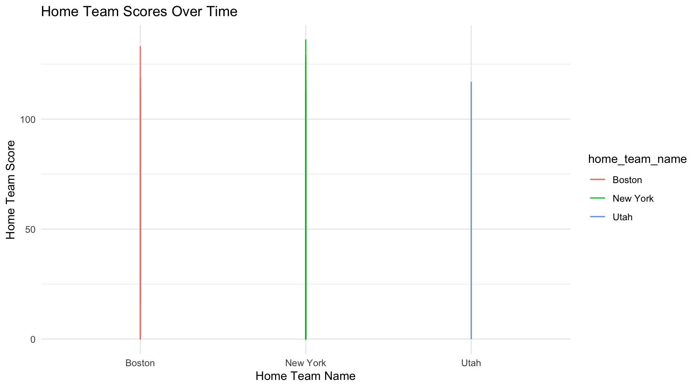

nba_pbp_ny <- read_csv("https://tristancostello.github.io/nba_hoopr_ny.csv")DANL Project
hoopR: The SportsDataverse’s R Package for Men’s Basketball Data.
1 Introduction
About this project üëè
This project seeks to examine and highlight the disparities in team performance between their home court and away games. Through a detailed analysis, we aim to uncover insights into how external factors, such as the playing venue, influence sporting outcomes. By exploring these nuances, we intend to provide valuable perspectives on the intricate dynamics that distinguish home and away performances in competitive sports.
2 Data
The dataset nba_pbp_ny comprises a subset of the NBA play-by-play data, specifically selected based on a criteria related to this years games. In the context of the project, this subset includes only those teams or players that consistently participated and demonstrated a sustained level of activity in the NBA across 2023-2024 season thus far. This criterion was utilized as a proxy for gauging the enduring relevance or popularity of specific teams or players during that period. The aim is to investigate and compare the performance metrics of these consistently active entities, both at their home court and away, providing insights into how their sustained presence correlates with their gameplay dynamics over the specified timeframe. üèÄ
2.1 Summary Statistics
rmarkdown::paged_table(nba_pbp_ny) skim(nba_pbp_ny) %>%
select(-n_missing)| Name | nba_pbp_ny |
| Number of rows | 10698 |
| Number of columns | 62 |
| _______________________ | |
| Column type frequency: | |
| character | 13 |
| Date | 1 |
| logical | 7 |
| numeric | 39 |
| POSIXct | 2 |
| ________________________ | |
| Group variables | None |
Variable type: character
| skim_variable | complete_rate | min | max | empty | n_unique | whitespace |
|---|---|---|---|---|---|---|
| type_text | 1 | 4 | 34 | 0 | 101 | 0 |
| text | 1 | 11 | 91 | 0 | 4997 | 0 |
| period_display_value | 1 | 11 | 11 | 0 | 4 | 0 |
| clock_display_value | 1 | 4 | 6 | 0 | 809 | 0 |
| home_team_name | 1 | 4 | 11 | 0 | 11 | 0 |
| home_team_mascot | 1 | 4 | 12 | 0 | 11 | 0 |
| home_team_abbrev | 1 | 2 | 4 | 0 | 11 | 0 |
| home_team_name_alt | 1 | 4 | 11 | 0 | 11 | 0 |
| away_team_name | 1 | 2 | 11 | 0 | 10 | 0 |
| away_team_mascot | 1 | 4 | 9 | 0 | 10 | 0 |
| away_team_abbrev | 1 | 2 | 3 | 0 | 10 | 0 |
| away_team_name_alt | 1 | 2 | 11 | 0 | 10 | 0 |
| time | 1 | 4 | 6 | 0 | 809 | 0 |
Variable type: Date
| skim_variable | complete_rate | min | max | median | n_unique |
|---|---|---|---|---|---|
| game_date | 1 | 2023-10-25 | 2023-12-13 | 2023-11-17 | 23 |
Variable type: logical
| skim_variable | complete_rate | mean | count |
|---|---|---|---|
| scoring_play | 1 | 0.25 | FAL: 8061, TRU: 2637 |
| shooting_play | 1 | 0.47 | FAL: 5650, TRU: 5048 |
| home_favorite | 1 | 1.00 | TRU: 10698 |
| game_spread_available | 1 | 0.00 | FAL: 10698 |
| home_timeout_called | 1 | 0.00 | FAL: 10698 |
| away_timeout_called | 1 | 0.00 | FAL: 10698 |
| type_abbreviation | 0 | NaN | : |
Variable type: numeric
| skim_variable | complete_rate | mean | sd | p0 | p25 | p50 | p75 | p100 | hist |
|---|---|---|---|---|---|---|---|---|---|
| game_play_number | 1.00 | 2.337600e+02 | 1.354700e+02 | 1.0 | 1.170000e+02 | 2.330000e+02 | 3.490000e+02 | 5.170000e+02 | ▇▇▇▇▅ |
| id | 1.00 | 3.479674e+11 | 1.288990e+11 | 4015840904.0 | 4.015841e+11 | 4.015848e+11 | 4.015849e+11 | 4.016176e+11 | ▂▁▁▁▇ |
| sequence_number | 1.00 | 3.345200e+02 | 1.931000e+02 | 4.0 | 1.670000e+02 | 3.340000e+02 | 4.990000e+02 | 7.210000e+02 | ▇▇▇▇▅ |
| type_id | 1.00 | 1.683500e+02 | 1.578100e+02 | 8.0 | 9.200000e+01 | 1.250000e+02 | 1.550000e+02 | 6.150000e+02 | ▇▆▁▁▂ |
| away_score | 1.00 | 5.642000e+01 | 3.272000e+01 | 0.0 | 2.900000e+01 | 5.600000e+01 | 8.400000e+01 | 1.300000e+02 | ▇▇▇▇▂ |
| home_score | 1.00 | 5.824000e+01 | 3.462000e+01 | 0.0 | 2.900000e+01 | 5.700000e+01 | 8.775000e+01 | 1.460000e+02 | ▇▇▇▆▁ |
| period_number | 1.00 | 2.540000e+00 | 1.120000e+00 | 1.0 | 2.000000e+00 | 3.000000e+00 | 4.000000e+00 | 4.000000e+00 | ▇▇▁▇▇ |
| score_value | 1.00 | 4.800000e-01 | 9.100000e-01 | 0.0 | 0.000000e+00 | 0.000000e+00 | 0.000000e+00 | 3.000000e+00 | ▇▁▁▁▁ |
| team_id | 0.99 | 1.659000e+01 | 7.730000e+00 | 1.0 | 1.500000e+01 | 1.800000e+01 | 1.800000e+01 | 3.000000e+01 | ▂▁▇▁▂ |
| athlete_id_1 | 0.92 | 3.619452e+06 | 1.172100e+06 | 3012.0 | 3.064514e+06 | 3.934673e+06 | 4.395625e+06 | 5.106258e+06 | ▂▁▃▆▇ |
| athlete_id_2 | 0.27 | 3.567903e+06 | 1.243843e+06 | 3012.0 | 3.064514e+06 | 3.934673e+06 | 4.395625e+06 | 5.106258e+06 | ▂▁▃▅▇ |
| athlete_id_3 | 0.00 | 3.376022e+06 | 1.130273e+06 | 3012.0 | 3.064514e+06 | 3.934672e+06 | 3.934672e+06 | 4.701230e+06 | ▁▁▁▅▇ |
| coordinate_x_raw | 1.00 | -3.938456e+07 | 8.311002e+07 | -214748340.0 | 8.000000e+00 | 2.500000e+01 | 2.700000e+01 | 4.900000e+01 | ▂▁▁▁▇ |
| coordinate_y_raw | 1.00 | -3.938458e+07 | 8.311002e+07 | -214748365.0 | 0.000000e+00 | 5.000000e+00 | 1.375000e+01 | 5.000000e+01 | ▂▁▁▁▇ |
| game_id | 1.00 | 4.015871e+08 | 7.969160e+03 | 401584090.0 | 4.015847e+08 | 4.015848e+08 | 4.015849e+08 | 4.016176e+08 | ▇▁▁▁▁ |
| season | 1.00 | 2.024000e+03 | 0.000000e+00 | 2024.0 | 2.024000e+03 | 2.024000e+03 | 2.024000e+03 | 2.024000e+03 | ▁▁▇▁▁ |
| season_type | 1.00 | 2.000000e+00 | 0.000000e+00 | 2.0 | 2.000000e+00 | 2.000000e+00 | 2.000000e+00 | 2.000000e+00 | ▁▁▇▁▁ |
| home_team_id | 1.00 | 1.530000e+01 | 8.580000e+00 | 1.0 | 5.000000e+00 | 1.800000e+01 | 1.800000e+01 | 3.000000e+01 | ▃▁▇▁▂ |
| away_team_id | 1.00 | 1.770000e+01 | 6.670000e+00 | 2.0 | 1.800000e+01 | 1.800000e+01 | 1.800000e+01 | 3.000000e+01 | ▁▁▇▁▂ |
| game_spread | 1.00 | 2.500000e+00 | 0.000000e+00 | 2.5 | 2.500000e+00 | 2.500000e+00 | 2.500000e+00 | 2.500000e+00 | ▁▁▇▁▁ |
| home_team_spread | 1.00 | 2.500000e+00 | 0.000000e+00 | 2.5 | 2.500000e+00 | 2.500000e+00 | 2.500000e+00 | 2.500000e+00 | ▁▁▇▁▁ |
| qtr | 1.00 | 2.540000e+00 | 1.120000e+00 | 1.0 | 2.000000e+00 | 3.000000e+00 | 4.000000e+00 | 4.000000e+00 | ▇▇▁▇▇ |
| clock_minutes | 1.00 | 5.130000e+00 | 3.500000e+00 | 0.0 | 2.000000e+00 | 5.000000e+00 | 8.000000e+00 | 1.200000e+01 | ▇▅▇▅▃ |
| clock_seconds | 1.00 | 2.820000e+01 | 1.782000e+01 | 0.0 | 1.300000e+01 | 2.800000e+01 | 4.300000e+01 | 5.920000e+01 | ▇▆▆▇▆ |
| half | 1.00 | 1.510000e+00 | 5.000000e-01 | 1.0 | 1.000000e+00 | 2.000000e+00 | 2.000000e+00 | 2.000000e+00 | ▇▁▁▁▇ |
| game_half | 1.00 | 1.510000e+00 | 5.000000e-01 | 1.0 | 1.000000e+00 | 2.000000e+00 | 2.000000e+00 | 2.000000e+00 | ▇▁▁▁▇ |
| lead_qtr | 1.00 | 2.550000e+00 | 1.120000e+00 | 1.0 | 2.000000e+00 | 3.000000e+00 | 4.000000e+00 | 4.000000e+00 | ▇▇▁▇▇ |
| lead_half | 1.00 | 1.510000e+00 | 5.000000e-01 | 1.0 | 1.000000e+00 | 2.000000e+00 | 2.000000e+00 | 2.000000e+00 | ▇▁▁▁▇ |
| start_quarter_seconds_remaining | 1.00 | 3.361900e+02 | 2.102500e+02 | 0.0 | 1.550000e+02 | 3.290000e+02 | 5.120000e+02 | 7.200000e+02 | ▇▇▇▆▆ |
| start_half_seconds_remaining | 1.00 | 6.838800e+02 | 4.144200e+02 | 0.0 | 3.280000e+02 | 6.970000e+02 | 1.027000e+03 | 1.440000e+03 | ▇▇▇▇▆ |
| start_game_seconds_remaining | 1.00 | 1.385570e+03 | 8.324000e+02 | 0.0 | 6.710000e+02 | 1.401500e+03 | 2.116000e+03 | 2.880000e+03 | ▇▇▇▇▆ |
| end_quarter_seconds_remaining | 1.00 | 3.354300e+02 | 2.098400e+02 | 0.0 | 1.550000e+02 | 3.280000e+02 | 5.110000e+02 | 7.200000e+02 | ▇▇▇▆▆ |
| end_half_seconds_remaining | 1.00 | 6.823100e+02 | 4.134700e+02 | 0.0 | 3.270000e+02 | 6.930000e+02 | 1.024000e+03 | 1.440000e+03 | ▇▇▇▇▆ |
| end_game_seconds_remaining | 1.00 | 1.382420e+03 | 8.304700e+02 | 0.0 | 6.695000e+02 | 1.397000e+03 | 2.110000e+03 | 2.880000e+03 | ▇▇▇▇▆ |
| period | 1.00 | 2.540000e+00 | 1.120000e+00 | 1.0 | 2.000000e+00 | 3.000000e+00 | 4.000000e+00 | 4.000000e+00 | ▇▇▁▇▇ |
| lag_qtr | 1.00 | 2.540000e+00 | 1.120000e+00 | 1.0 | 2.000000e+00 | 3.000000e+00 | 4.000000e+00 | 4.000000e+00 | ▇▇▁▇▇ |
| lag_half | 1.00 | 1.510000e+00 | 5.000000e-01 | 1.0 | 1.000000e+00 | 2.000000e+00 | 2.000000e+00 | 2.000000e+00 | ▇▁▁▁▇ |
| coordinate_x | 1.00 | -3.091350e+06 | 9.191851e+07 | -214748406.8 | -3.775000e+01 | -1.475000e+01 | 3.675000e+01 | 2.147484e+08 | ▁▁▇▁▁ |
| coordinate_y | 1.00 | -3.091349e+06 | 9.191849e+07 | -214748365.0 | -8.000000e+00 | 0.000000e+00 | 7.000000e+00 | 2.147484e+08 | ▁▁▇▁▁ |
Variable type: POSIXct
| skim_variable | complete_rate | min | max | median | n_unique |
|---|---|---|---|---|---|
| wallclock | 1 | 2023-10-25 23:14:00 | 2023-12-14 04:39:36 | 2023-11-18 01:26:48 | 9407 |
| game_date_time | 1 | 2023-10-25 23:00:00 | 2023-12-14 02:00:00 | 2023-11-18 00:00:00 | 23 |
2.2 Home Score and Team
The following boxplot shows the home score (home_score) of the home team (home_team_name) :basketball
ggplot(data =
nba_pbp_ny %>%
filter(home_team_name %in% c("Utah", "New York","Boston"))) +
geom_boxplot(aes(x = home_team_name, y = home_score,
fill = home_team_name),
show.legend = FALSE)2.3 Away Score and Team
The following boxplot shows the away score (away_score) of the away team (away_team_name) :basketball
ggplot(data =
nba_pbp_ny %>%
filter(away_team_name %in% c("Utah", "New York","Boston"))) +
geom_boxplot(aes(x = away_team_name, y = away_score,
fill = away_team_name),
show.legend = FALSE)
2.4 Home Score and Team
The following line graph shows the home score (home_score) of the home team (home_team_name) :basketball
nba_pbp_ny %>%
filter(home_team_name %in% c("Utah", "New York", "Boston")) %>%
ggplot(aes(x = as.factor(home_team_name), y = home_score, group = home_team_name, color = home_team_name)) +
geom_line() +
labs(title = "Home Team Scores Over Time",
x = "Home Team Name",
y = "Home Team Score") +
theme_minimal()
2.5 Away Score and Team
The following line graph shows the away score (away_score) of the away team (away_team_name) :basketball
nba_pbp_ny %>%
filter(away_team_name %in% c("Utah","New York", "Boston")) %>%
ggplot(aes(x = as.factor(away_team_name), y = away_score, group = away_team_name, color = away_team_name)) +
geom_line() +
labs(title = "Away Team Scores Over Time",
x = "Away Team Name",
y = "Away Team Score") +
theme_minimal()2.6 Why do teams tend to do better at home?
Home court advantage serves as a decisive factor across all professional sports, providing teams with a significant edge through a positive atmosphere and heightened motivation fueled by fan support. The familiar surroundings and enthusiastic cheers contribute to a sense of camaraderie, inspiring players to deliver standout performances on their home court. This intricate interplay between psychological factors and tangible gameplay dynamics underscores the enduring impact of home court advantage in shaping the outcomes of competitive matches.
2.7 Why do teams score more against other teams?
Teams may score more against certain opponents due to a variety of factors. These could include differences in team strategies, strengths and weaknesses, player matchups, and tactical variations that exploit vulnerabilities in the opposing team’s defense. Additionally, factors such as team morale, motivation, and the specific dynamics of each match can influence scoring outcomes, creating variations in performance against different opponents. Understanding the specific elements at play, both strategically and psychologically, contributes to unraveling the complexities behind why teams may exhibit higher-scoring performances against certain adversaries.
2.8 Are there specific players associated with higher scoring games?
Yes, specific basketball players are often associated with higher-scoring games, and their individual performances can significantly impact the overall scoring of their teams. Star players known for their scoring abilities, such as prolific scorers or sharpshooters, tend to contribute more points to their team’s total. Factors such as a player’s skill set, shooting accuracy, scoring versatility, and ability to create scoring opportunities can all influence their association with higher-scoring games. Analyzing individual player performances provides insights into the key contributors to a team’s overall scoring and helps identify players who consistently excel in putting points on
2.9 Can we identify any variables that correlate strongly with team performance?
Exploring the correlation between various variables and team performance is crucial for gaining insights into the factors that contribute to a team’s success. Key variables to consider include player statistics (e.g., points per game, assists, rebounds), team dynamics, coaching strategies, and game-related metrics (e.g., field goal percentage, three-point percentage, turnovers). By conducting a comprehensive analysis, we can identify which of these factors exhibit a strong correlation with team performance, providing valuable information for coaches, analysts, and teams seeking to optimize their strategies and enhance overall on-court success.